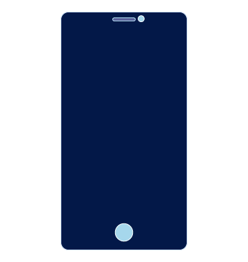
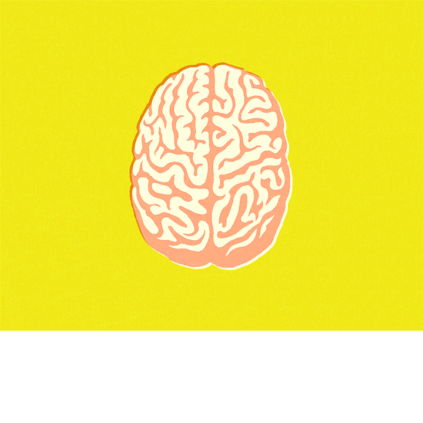

The Simplest Way to Make Your Life More Pleasurable
by Molly Savard
2.33.22

One day while shoveling the contents of a tofu noodle bowl into the hole in my soul, I realized I wasn’t actually tasting anything. I was eating while scrolling through Twitter, devouring its deluge of jokes and daily horrors along with chunks of bok choy, and the flavors in my dish were utterly dull. I paused, looked away from my screen and took another bite. I focused on how it tasted and felt: the umami of the vegan nuoc cham, the stickiness of the rice noodles, the softness of the tofu as I bit through the breading into its creamy belly.
Now, it actually tasted like something.
I’ve recently become more aware of these flat-feeling moments. How, in the morning, when I step outside, I will immediately map my commute. The sun could be shining, a light breeze could be blowing and, face buried in phone, I will barely feel any of it. Or how, at night, I’ll slip into bed and, like a Netflix-programmed bot, immediately hit “play” on the next episode of Schitt’s Creek. My body could be tired, my bed could be soft, but all I’ll notice is the placating numbness of content being streamed into my eyeballs.
Still, I’m loathe to join the “put your phone down and get outside!” chorus. (It’s overly simplistic, and what if you don’t like outside?) Many of us aren’t in a position to live lives completely void of technology. As of 2013, 94 percent of jobholders were internet users. But lately, I’ve started to wonder whether the constant distractions of our digital world are actually muting our experiences of physical pleasure — or at least, my own.
There’s some research to back this up: One study published in 2013 tested how distraction affects our eating habits. Researchers gave participants sweet, sour and salty substances in varying intensities and asked them to perform tasks. The people under higher task loads reported the substances as less intense, and ate more of them than those under lower task loads. Another study demonstrated how distraction helps lessen pain— and given that the same brain system involved in experiencing pain is also involved in experiencing pleasure, it’s conceivable that distraction might also lessen pleasure, too. Just ask anyone who’s had sex while awaiting a high-stakes email reply from their boss.

I divided the responses up by category for your viewing pleasure. Have a scroll and let me know what you think in the comments. I’ll be waiting with both hands outstretched, plus a bottle of Purell.
If, like me, you’ve found yourself increasingly disconnected from physical pleasure, you might think of “mindfulness” as one way to reconnect. At least, that’s what therapists and Instagram influencers suggest. But mindfulness as a concept has always overwhelmed and frustrated me, its vagueness ringing hollow like inspirational mantras reminding me to #beherenow, or the quintessential “live, laugh, love” pillow adorning your aunt’s couch. As I’ve become more conscious of my seemingly deadened senses, though, I’ve realized mindfulness might be as simple as slowing down to actually taste my food. Or taking a moment to settle when I get into bed at night, feeling the weight of my body between the blankets and sighing out whatever bullshit the world threw at me that day. Pinpointing pleasure as a mindfulness target has, for me, made the practice seem less impossible or absolute.
According to Dr. Victoria Reuveni, an educator and certified sexological bodyworker, it’s through these small, mindful acts that we can start to expand our potential for pleasure. “Noticing a breeze, savoring each bite of food, paying attention to the feeling of toweling off after a shower… [these] are all smaller ways to begin to enliven all the senses,” she told me via email. What’s beautiful about this is these opportunities for deepening sensation are already built into our days — they don’t require getting up earlier or downloading an app — and taking advantage of them has been shown to contribute to greater overall happiness.
For many us, this might require some unlearning. We’re conditioned to maximize (and monetize) every moment of our days, and we often feel guilty if we forego work for the sake of acting purely for pleasure. I’m constantly complaining about being trapped in a capitalist system that runs on sexism, white supremacy, self-policing and devotion to devices that — one could argue — have become crucial to our survival. Yet I barely notice the wonder that is the sun’s photons warming my face because I’m too busy swiping through the paths of least congestion to get to work faster and increase my efficiency.
My new inspirational mantra is: fuck efficiency, get pleasure. What if we took a break from double-timing eating and answering emails, or tweeting while we poop? (Say what you will, but for many defecating is a pleasurable experience.) What if we just allowed ourselves these few, precious moments a day to feel unabashed, unmitigated pleasure?
Of course, reconnecting with the sensual experiences of being human isn’t a switch to be flipped, and there isn’t a definitive cure-all (i.e. “going outside”). But in a time when we’re encouraged to measure fulfillment in likes and emails answered, reclaiming pleasure in these small ways — in pausing to take the first deep breath of our day before checking our mentions, or allowing ourselves a post-exercise stretch without digital double-tasking — can be an act of resistance, and has the power to make us more fulfilled and energized in the long run.
Not to mention, it can be delicious.

One day while shoveling the contents of a tofu noodle bowl into the hole in my soul, I realized I wasn’t actually tasting anything. I was eating while scrolling through Twitter, devouring its deluge of jokes and daily horrors along with chunks of bok choy, and the flavors in my dish were utterly dull. I paused, looked away from my screen and took another bite. I focused on how it tasted and felt: the umami of the vegan nuoc cham, the stickiness of the rice noodles, the softness of the tofu as I bit through the breading into its creamy belly.